この授業では先行する情報工学の専門科目の基礎知識を応用して実践的な能力を修得することが目的です。 個人的な目標としてはちゃんと授業内容を踏まえてHTML等を用いたWebページ作成ができるようになることです。
グルメ情報を選びます。(200)
プロジェクト課題で作成したページ： プロジェクト課題
講義資料のkazuate.jsを丸コピーして課題を完成する形になっているのだが、気をつけてない間にタイトルのkazuate.jsまでコピーしそのまま貼り付けた。コンソール実行時に何度やってもエラーが出て、絶望のような時間を過ごしました、でも先輩に聞いてたら、どのくらい簡単なミスをしたかと意識して、本当に悔しかった。。
課題自体は難しくないと思う。ほどんどjavaの書き方と変わらないSystem.out.println()をconsole.log()にすればよくて、あとは比較の時＝は三つ使うように注意しましまた。
課題４−１更新：課題４−１では
で入力ボックスを作りました。また、document.querySelector()を使ってHTMLの入力値やボタンなどの要素を取得します。そして、let botan = document.querySelector('#botan');
botan.onclick = function() {}の中に、入力された値を読み込み、判定、出力する機能などの処理を書き込むことができます。さらに、textContentプロパティを利用することで、ユーザーの入力内容により、ボタンを押すたびにそれに応じた結果が表示されるようになりました。
数あてゲームのページ： 数あてゲームのHTMLファイル
初めてhtmlの授業を受けて色々学びました。ほどんどの符号が<>で囲んでいるとわかりました、そのほかにも<を使って<>を普通の文字として表現するなども学びました。自分の編集で真っ白のホームページから情報いっぱい入力してとても達成感を感じました。これからの授業楽しんでいます。
演習の成果： 演習1-4のHTMLファイル
2回目の授業で色なhtmlの装飾法を学びました。まずは、HTML の head 要素に追加で次の link 要素を記述します． これでCSS のファイル「style.css」に従ってページを装飾できるようになりました 次にはcolorで文字の色の変更、class="special"や.specialの連動で特定の要素の指定を学びました。そしてリンクをクリックすると色が変わる機能をa:link { color: pink; } a:visited { color: blue; } a:hover { text-decoration: none; }でできました。そのほかにもborder-bottomの変更、padding、height、widthなどを学びました
演習の成果： 演習2-3のHTMLファイル
3回目の授業になりました。今回では新しい言語『JavaS cript』について学びました。まず、CSSのように、外部のJavaScriptを追加するには、でHTML の head 要素に script 要素を追加することが必要です console.log('こんにちは');で文書を表示することができる、考えたらjavaのSystem.out.printの役割をしているのではないかと思いました。でもjavaと違うのは、Javascriptではlet一つでいろんな変数を定義できておても覚えやすいです。 それで for-of 構文for (let n of ns) {} カッコのなかのコマンドにより配列の要素1つずつに対してその処理をすることを学びました。 だんだん難しくなっていると感じたけど、頑張りたいと思います。
演習の成果： 演習3-6のHTMLファイル
4回目の授業です、あど二週でhtmlの授業が終わりますが、まだまだ自分のページにいろんな不足があります。今週の課題はちょっと時間かかりすぎました。まず、htmlに
メッセージ
を書き足して検索欄を作ることができました。inputは入力項目で、typeの属性値での入力の種類を決めることができます。例えば、textはテキストボックス、colorは色など。ブラウザによって、入力画面も違います。 そして、document.querySelector()、カコの中にhtmlの要素名を書き込んで、その要素を取得することができます、let 変数名 = document.querySelector()で変数名にhtmlの要素を代入することが一般的な使い方です。 また、function 名前{イベント}や変数名 = document.querySelector('button#ボタンの名前'); 変数名.addEventListener('click', 名前);でイベントハンドラを登録することができます。今回はこれを使って数あてゲームでボタンを押すと入力により出力をすることができるようにしました。演習の成果： 演習4-10のHTMLファイル